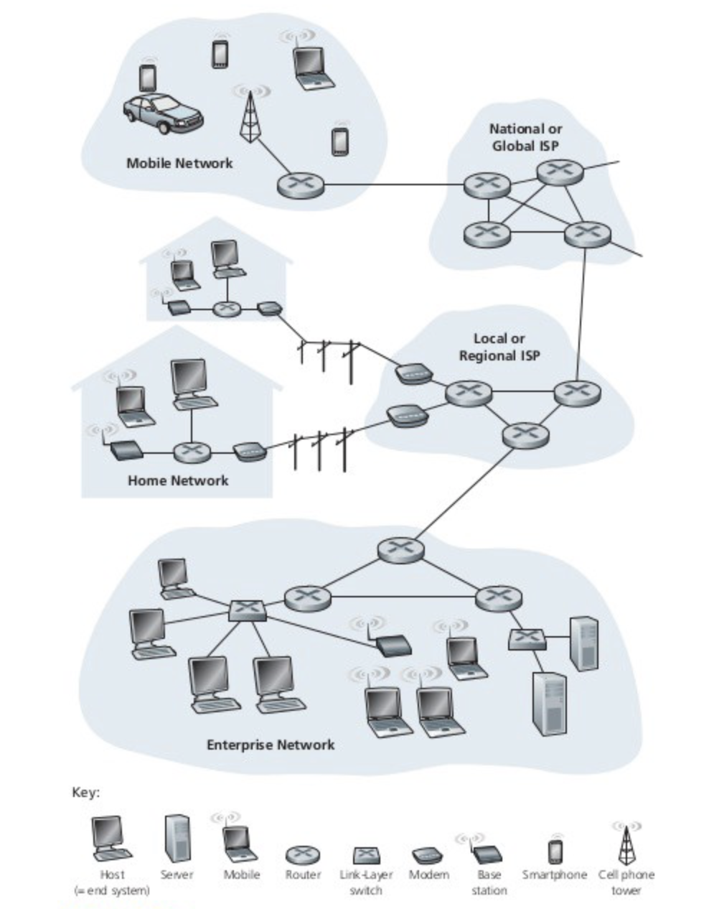

Networking Fundamentals¶
What is the internet?¶
The internet is a huge network of computing devices communicating with each other based on a pre-agreed set of rules called protocols.
The internet is a global computer network providing a variety of information and communication facilities, consisting of interconnected networks using standardized communication protocols. (google definition)

How is this network formed and how does it work?¶
The edge devices that are part of this network are called hosts or end systems. For enample: Laptops, mobiles are the end systems. The end systems are connected by a network of communication links and packet switches. The communication links are made up of physical connections made of copper wires, fiber optics, radio spectrum etc. One end system sends data to another by segmenting the data into small segments with header bytes on them. These packages of information are called packets and are sent through the network to the destination end system where they are reassembled into the original data. A packet switch is responsible for routing the packets to its destination. The packet switch takes a packet arriving on one of its incoming communication links and forwards that packet on one of its outgoing communication links. Our router is a packet switch. The sequence of communication links and packet switches traversed by a packet in known as the route through the network.
There is beautiful analogy presented in the book Computer Networking by Kurose and Ross. It says, if a factory needs to move a large amount of cargo to some destination warehouse located thousands of kilometers away, then, the cargo is first segmented and loaded into a fleet of trucks. Each of the trucks then independently travels through the network of highways, roads, and intersections to the destination warehouse. At the destination warehouse, the cargo is unloaded and grouped with the rest of the cargo arriving from the same shipment. Thus, in many ways, packets are analogous to trucks, communication links analogous to highways and roads. Packet switches are analogous to intersections, and end systems are analogous to destination buildings.
What are ISPs, TCP/IP and RFCs?¶
ISPs¶
End systems access the internet through Internet Service Provider(ISPs). ISPs include local cable or telephone companies. Each ISPs is in itself a network of packet switches and communication links. These ISPs are also interconnected. Lower-tier ISPs are interconnected through national and international upper-tier ISPs such as AT&T and Sprint.
TCP/IP¶
All the component of this network run protocols that control the sending and receiving of information. A protocol defines the format and the order of the messages exchanged between two or more communicating entities, as well as the actions taken on the transmission and/or receipt of a message or other events. The Transmission Control Protocol(TCP) and the Internet Protocol(IP) are the two of the most important protocols that are sent and received among the routers and end systems. The internet’s principle protocols are collectively known as TCP/IP.
IEFT and RFCs¶
These protocols are most important for the unanimous functioning and thus important that everyone agrees on what each and every protocol does. These Internet standards are developed by the Internet Engineering Task Force(IETF). The IETF standard documents are called request for comments(RFCs).
How does one application running on one end system instructs the Internet to deliver data to another software running on another end system?¶
End systems attached to the Internet, provide an Application Programming Interface(API) that specifies the rules for this process.
Taking an analogy from the same book: Suppose Alice wants to send a letter to Bob using the postal service. Alice, of course, can’t just write the letter(the data) and drop the letter out her window. Instead, the postal service requires that Alice put the letter in an envelope; write Bob’s full name, address, and zip code in the center of the envelope; seal the envelope; put a stamp in the upper-right-hand corner of the envelope; and finally, drop the envelope into an official postal service mailbox. Thus, the postal service has its own “postal service API”, or set of rules, that Alice must follow to have the postal service deliver her letter to Bob.
In a similar manner, the internet has an API that the software sending data must follow to have the internet deliver the data to the software that will receive the data.
What are client and server program and P2P architecture?¶
A client program is a program running on one end system that requests and receives a service from a server program running on another end system. The web browser is an example of a client program and Nginx or NodeJS or Tomcat is an example of a server program.
Not all Internet application today consists of pure client programs interacting with pure server programs. Increasingly, many application is peer-to-peer(P2P) applications, in which end systems interact and run programs that perform both client and server functions. For example, in P2P file-sharing applications(such as BitTorrent or eMule), the program in the user’s end system act as a client when it requests a file from another peer; and the program acts as a server when it sends a file to another peer.
What are LAN and WAN?¶
LAN¶
Local Area Network (LAN) is a computer network, which is limited to a small office, a single building, multiple buildings inside a campus etc. Typically a LAN is a private network owned and maintained by a single organization.
WAN¶
A Wide Area Network (WAN) spans over multiple geographic locations, which is composed of multiple LANs. ISPs provide the connectivity solutions for WAN.
What is an IP address?¶
For one device to communicate with another, it needs an IP address, and it must be unique. If there is another device on the same network with the same IP there will be an IP address conflict and both devices will lose network capability until this is resolved.
The IP address consists of 4 numbers separated by decimals. The IP address itself is separated into a network address and a host address. This means that one part of the IP address identifies the computer network ID and the other part identifies the host ID. As an example, an IP address of 192.168.0.11 with subnet mask 255.255.255.0 uses the first 3 numbers to identify the network and the last number to identify the host. So, the network id would be 192.168.0 and the host id would be 11. Devices can only communicate with other devices on the same network id. In other words, communication will work between 2 devices with IPs 192.168.0.221 and 192.168.0.11 respectively but neither can communicate with 192.168.1.31 because it is part of the 192.168.1 network.
Subnet Mask : As a general rule wherever there is a 255 in the subnet mask then the corresponding number of the IP address is part of the network id; where there is 0 in the subnet mask the corresponding number in the IP address is part of the host id. For an IP address of 192.168.0.1 with a subnet mask of 255.0.0.0. This tells the device that the first number of the IP address is to be used as the network address and the last 3 are to be used as the host id. In this example, the computer network would be 192.x.x.x. As long as another computer has the same subnet mask and an IP address starting with 192 they can communicate with each other. If the subnet mask was 255.255.0.0 then this means that the first 2 numbers identify the network instead (192.168.x.x). Therefore to be on the same network both devices must have IP addresses starting with 192.168.
How do devices on different networks communicate?¶
Communication across different network IDs take place with the help of a router. A router is a network device with 2 network interfaces (NICs), each being on separate network ids. So, we may have 2 networks; 192.168.1.x and 192.168.2.x. On one NIC the router would have the IP address 192.168.1.1 and on the other, it would have an IP address of 192.168.2.1. Devices on the 192.168.1.x network can now communicate with devices on the 192.168.2.x network via the router.
How does the data travel from source end system to destination end system?¶
The default gateway is where a network device sends traffic to if it doesn’t know the destination IP address. The default gateway is always a router. When a network device tries to communicate with another on the same network it sends the data directly to it. If it is on a separate network it forwards the data to whatever IP address is specified in the default gateway. This is because it doesn’t know of this other network and it needs to send the data to a gateway out of its own network. This is why we always put the IP address of the router in the default gateway field. Because a router will be attached to multiple networks, so it knows where these other networks are and it can route traffic to them. Routers also have default gateways so that if they don’t know where the destination is then they can also send the data to its own default gateway. This continues up the IP network hierarchy until it eventually finds a router that is part of the destination network. This last router knows where the destination is and sends it on its way.
What is DHCP?¶
Network devices need to be configured with an IP address, subnet mask and default gateway that will be unique to that network. Generally, we don’t manually configure them but are configured automatically using DHCP servers. DHCP stands for Dynamic Host Configuration Protocol. Servers and some routers can be configured to act as a DHCP server. It allots the IP addresses to the connecting devices so to prevent IP address conflicts.
How does a router function?¶
A router should have at least two network cards (NICs), one physically connected to one network and the other physically connected to another network. A router can connect any number of networks together providing it has a dedicated NIC for each network.
Routers also learn which are the fastest routes and use them first. Each route the router knows of has a metric value assigned to it. A metric value is basically a preference number. If there are two routes to the same destination then the one with the lowest metric is assumed to be the most efficient. Routers will always use this route first until it fails, in which case it will then try the route with the next lowest metric and so on.
All network devices that use the TCP/IP protocol have a routing table. On Linux based system run netstat -rn command to view this table. All devices use their routing table to determine where to send packets. When a device sends packets to another device, it looks at its routing table to determine the best route possible. If it finds the destination address is “on-link” it knows that it is a part of the same subnet as the destination and sends the packets directly to the device. If not it forwards the packet onto whatever is in the gateway field of the matching route entry. This same process is repeated at every router/hop along the way until it eventually arrives at a router that is part of the destination network.
What is a port?¶
In the internet protocol suite, a port is an endpoint of communication in an operating system, in software, it is a logical construct that identifies a specific process or a type of network service.
A port is always associated with an IP address of a host and the protocol of the communication. A port is identified for each address and protocol by a 16-bit number, commonly known as the port number. For example, an address may be “protocol: TCP, IP address: 1.2.3.4, port number: 80”, which is written as 1.2.3.4:80 when the protocol is known from context.
The port, which is the number after “:” in the IP address defines the port on which the data has to be sent.By default, HTTP uses port 80 and HTTPS uses port 443, and we don’t add them in the browser but are implicitly handled by the browsers. But a URL like http://www.example.com:8080/path/ specifies that the web browser connects instead to port 8080 of the HTTP server.
What is port forwarding?¶
Port forwarding or port mapping is an application of network address translation (NAT) that redirects a communication request from one address and port number combination to another while the packets are traversing a network gateway, such as a router or firewall. This technique is most commonly used to make services on a host residing on a protected or masqueraded (internal) network available to hosts on the opposite side of the gateway (external network), by remapping the destination IP address and port number of the communication to an internal host.
What this mean is that when a request arrives at a router at a specific port then it reroutes this request to a server in the local network of the router so to be able to process it (if configured on NAT settings). So, it in a way works as a gatekeeper.
What is DNS?¶
Domain names are the human-friendly forms of Internet addresses and are commonly used to find websites. The domain name system(DNS) is essentially a global addressing system. It is the way that domain names are located and translated into Internet Protocol (IP) addresses, and vice versa. A domain name such as example.com is a unique alias for an IP address 123.123.123.123, which is an actual physical point on the Internet. The Internet Corporation for Assigned Names and Numbers (ICANN) is a non-profit organization responsible for coordinating the maintenance and procedures of several databases related to the namespaces of the Internet. We can buy a domain name from a vendor like GoDaddy and others for a period and then tell that domain to point to an actual server address using the websites of those vendors.
What is a public IP address?¶
A public IP address is an IP address that our home or business router receives from your ISP. Public IP addresses are required for any publicly accessible network devices, like for our home router as well as for the servers that host websites.
Public IP addresses are what differentiate all devices that are plugged into the public internet. Each and every device that’s accessing the internet is using a unique IP address. It’s this address that each Internet Service Provider uses to forward internet requests to a specific home or business.